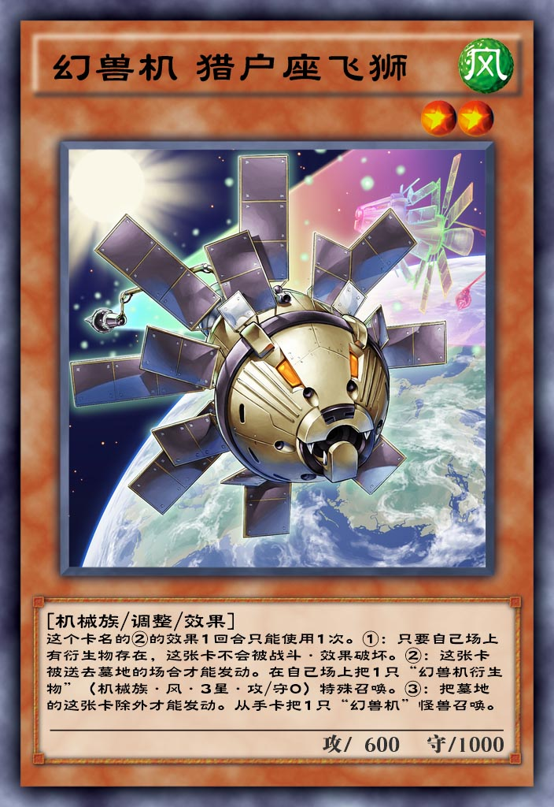

| 中文名 | 幻兽机 猎户座飞狮 |  |
| 日文名 | 幻獣機オライオン | |
| 英文名 | Mecha Phantom Beast O-Lion | |
| 卡片种类 | 怪兽 效果 调整 | |
| 数据库编号 | 11055 | |
| 使用限制 | 无限制 | |
| 种族 | 机械 | |
| 属性 | 风 | |
| 星级 | 2 | |
| 攻击力 | 600 | |
| 防御力 | 1000 | |
| 罕见度 | 超凡 | |
| 获取方式 | 钻石星尘 | |
| 字段 | ||
幻兽 幻兽机 |
||
| 链接 | ||
百鸽 Yu-Gi-Oh! Wikia |
||
| 效果 | ||
这个卡名的②的效果1回合只能使用1次。 ①：只要自己场上有衍生物存在，这张卡不会被战斗·效果破坏。 ②：这张卡被送去墓地的场合才能发动。在自己场上把1只「幻兽机衍生物」（机械族·风·3星·攻/守0）特殊召唤。 ③：把墓地的这张卡除外才能发动。从手卡把1只「幻兽机」怪兽召唤。 |
||
| 调整 | ||
[幻兽机 猎户座飞狮] <14/05/09> [幻獣機オライオン] ●自己的主要阶段时把墓地的这张卡从游戏中除外才能发动。从手卡把1只名字带有「幻兽机/幻獣機」的怪兽召唤。 ◇从墓地发动的起动效果，开连锁，不取对象，除外墓地的此卡自身是效果发动COST。 ◇多张此卡一回合可以多次发动。 ●只要自己场上有衍生物存在，这张卡不会被战斗以及效果破坏。 ◇永续效果，不开连锁。 ●这张卡被送去墓地的场合，可以把1只「幻兽机衍生物/幻獣機トークン」（机械族·风·3星·攻/守0）特殊召唤。「幻兽机 猎户座飞狮/幻獣機オライオン」的这个效果1回合只能使用1次。 ◇从墓地发动的诱发效果，任意发动，开连锁，不取对象。在伤害步骤满足条件可以发动。 ◇在此卡从手札·卡组送去墓地的场合也能发动。 ◇场合的诱发效果，不会错过时点无法发动。 |
||